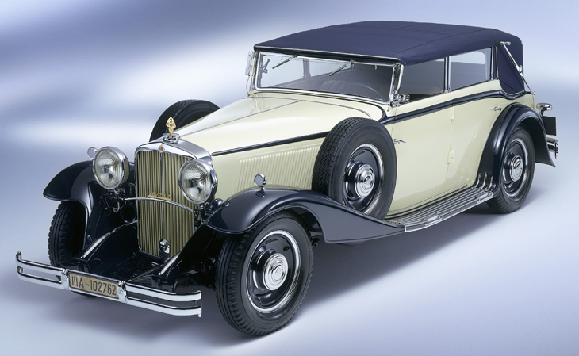
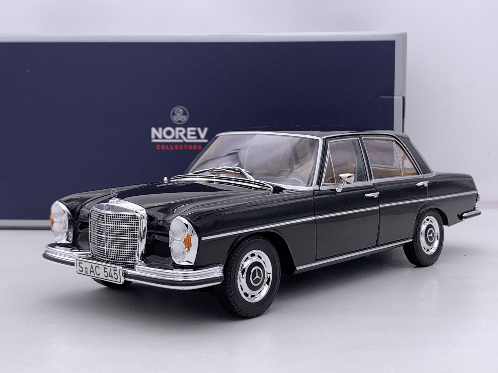
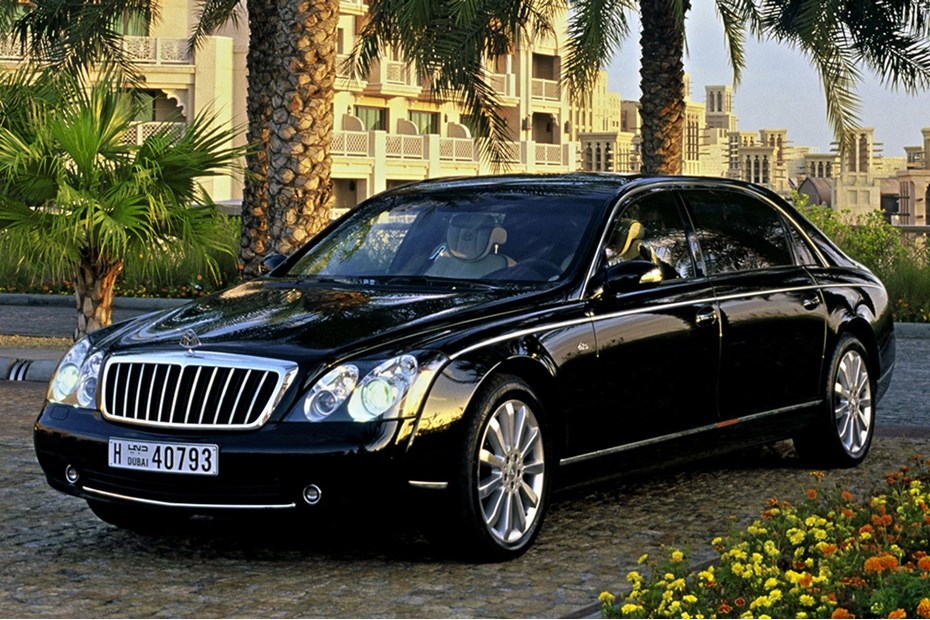
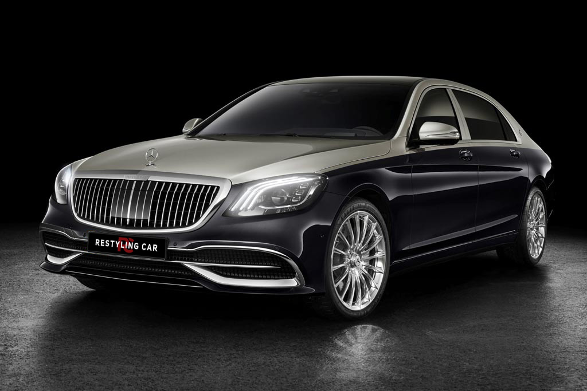

The History of Maybach
Introduction
Maybach is a German luxury car brand that was founded in 1909 by Wilhelm Maybach and his son, Karl Maybach. Initially, it was known for its engines for Zeppelins and later became renowned for its luxurious automobiles.
1909-1940:Early history
The company originally developed and manufactured diesel and petrol engines for Zeppelins, and then rail cars. The company first built an experimental car in 1919, introduced as a production model two years later at the Berlin Motor Show. Between 1921 and 1940, the company produced a variety of opulent vehicles, now regarded as classics. The company also continued to build heavy-duty diesel engines for marine and rail purposes.
1960s
Daimler-Benz purchased the company in 1960. Post-1960, the company was mainly used to make special editions of Mercedes cars in the W108 and W116 model range, which were virtually hand built. These cars however carried the Mercedes badge and serial numbers. Rolls-Royce Power Systems AG, based in Friedrichshafen, used to manufacture the commercial Maybach diesel engines under the MTU brand through its subsidiary MTU Friedrichshafen GmbH.
1997-2013
Daimler presented a luxury concept car at the 1997 Tokyo Motor Show. A production model based on it was introduced – the Maybach 57 and the Maybach 62, reflecting the length of the automobile in decimetres.To promote the new Maybach line, Mercedes-Benz engaged figures such as Maybach heir Ulrich Schmid-Maybach and golfer Nick Faldo to serve as brand ambassadors.
2015-present
The company announced that the line would be replaced by the next-generation of the Mercedes-Benz S-Class, Model W222, due for the 2014 model year, particularly the long wheelbase S-Class Pullman. An executive told a Frankfurt newspaper that "Daimler came to the conclusion that the sales chances for the Mercedes brand were better than that of Maybach."
